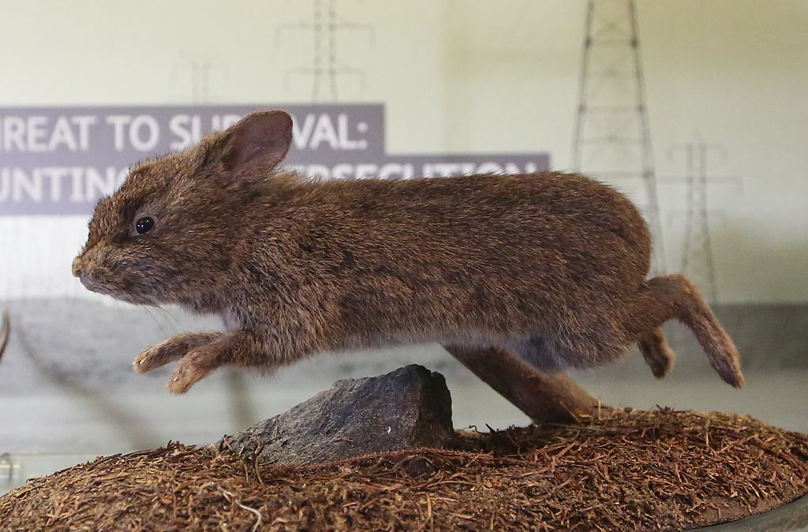

Rabbits are small mammals in the family Leporidae (along with the hare) of the order Lagomorpha (along with the pika). Oryctolagus cuniculus includes the European rabbit species and its descendants, the world's 305 breeds of domestic rabbit. Sylvilagus includes 13 wild rabbit species, among them the seven types of cottontail. The European rabbit, which has been introduced on every continent except Antarctica, is familiar throughout the world as a wild prey animal and as a domesticated form of livestock and pet. With its widespread effect on ecologies and cultures, the rabbit (or bunny) is, in many areas of the world, a part of daily life—as food, clothing, a companion, and a source of artistic inspiration.
Although once considered rodents, lagomorphs like rabbits have been discovered to have diverged separately and earlier than their rodent cousins and have a number of traits rodents lack, like two extra incisors.
Male rabbits are called bucks; females are called does. An older term for an adult rabbit used until 18c. is coney (derived ultimately from the Latin cuniculus), while rabbit once referred only to the young animals. Another term for a young rabbit is bunny, though this term is often applied informally (particularly by children) to rabbits generally, especially domestic ones. More recently, the term kit or kitten has been used to refer to a young rabbit.
A group of rabbits is known as a colony or nest (or, occasionally, a warren, though this more commonly refers to where the rabbits live). A group of baby rabbits produced from a single mating is referred to as a litter and a group of domestic rabbits living together is sometimes called a herd.
The word rabbit itself derives from Middle English "rabet", a borrowing from Walloon "robète" which was a diminuitive of French or Middle Dutch "robbe"

Rabbits are often quoted as having a lifespan of around five years. However, they can actually live to a maximum of 12 years, with small breeds living longer than their larger cousins. This low estimate is often due to a lack of understanding of their needs and the assumption that they’re children’s pets.
Most well-looked after rabbits live to around 7-10 years, so with the right environment and care, they make great long-term companions.
Rabbits are incredibly sociable, so keeping a pair of rabbits will greatly improve their quality of life. A pair of rabbits will give each other essential companionship, warmth during the winter and important grooming to areas they can’t reach themselves, such as around their eyes.